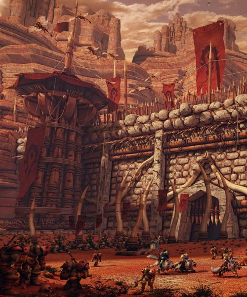

Orgrimmar
Orgrimmar est la capitale de la Horde, située à Durotar. Elle est construite dans un style architectural typique de la Horde et est dirigée par le Chef de guerre.
Découvrez les capitales emblématiques de World of Warcraft.
Orgrimmar est la capitale de la Horde, située à Durotar. Elle est construite dans un style architectural typique de la Horde et est dirigée par le Chef de guerre.
Dalaran est une cité flottante neutre située sur les Îles Brisées (Légion). Elle est connue pour son importance magique et son rôle central dans les événements du jeu.
Hurlevent est la capitale de l'Alliance, située dans la région d'Elwynn. Elle est réputée pour son architecture élégante et son rôle central dans l'histoire d'Azeroth.